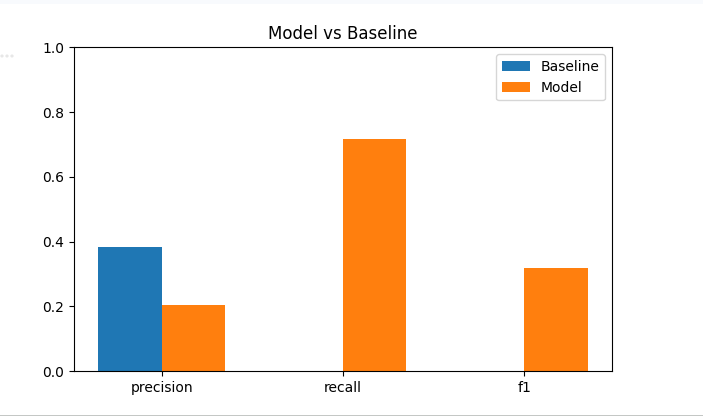
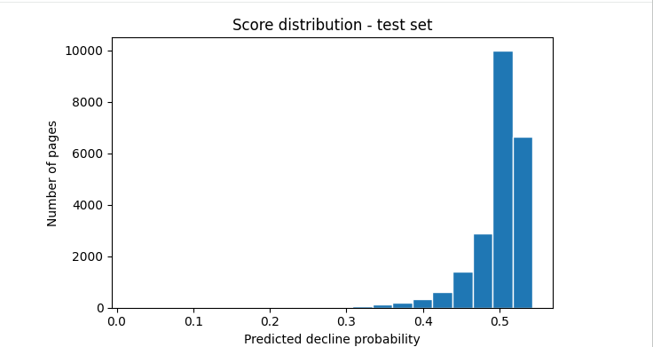

A FlyRank Search Intelligence capstone project
This project tries to answer a simple question, can I predict which pages are about to lose search visibility using only data that was already closed by the time I'm predicting. I used real search performance data from February and March 2026, first built a simple rule based baseline, then trained a logistic regression model on top of it to see if it could do better. The model ended up catching a lot more of the actual declining pages than the baseline did, 73 percent versus less than 1 percent, but it also flagged more false alarms along the way, so it's a tradeoff, not a clean win. I ran into a leakage problem early on, one of my features was basically giving away the answer, so I had to catch that and remove it before trusting any of my numbers. What I ended up with isn't a perfect predictor, but it's still a better starting point than nothing for figuring out which pages a content team should check first.
A content team can't sit down and manually check every single page every month to see if it's losing search visibility, there's just too many pages. This project is meant to support one decision: out of a big inventory of pages, which ones should get reviewed for a refresh first, so the limited time the team has actually goes toward the pages that need it.
Getting this wrong isn't free either way. If I flag a page that turns out to be fine, that's just a few wasted minutes of review. But if I miss a page that's actually declining, it just keeps losing traffic quietly and nobody catches it.
Data comes from the FlyRank ML Internship warehouse release on Hugging Face, tables
dim_content and fact_content_daily_performance (month
partitions 2026-02 and 2026-03).
February 2026 is used as the closed month for features. March 2026 is the month being predicted. One row is one page's performance for one client, summed over the full month.
Columns used: gsc_impressions, gsc_clicks,
gsc_avg_position, content_created_date,
content_updated_date, word_count, content_type.
Pages with fewer than 50 February impressions were dropped, leaving 89,086 pages out of 321,546. Very small or brand new pages do not have enough signal to score reliably. No client names, domains, URLs, or credentials appear anywhere. All IDs are hashed.
Baseline: a simple rule using two flags. STALE if the
page has not been updated in over 90 days. CTR_GAP if the page ranks in
the top 20 positions but still has a low click through rate. Pages get a score, and
the score decides if a page is priority_review, monitor, or
no_action.
Label: is_declining, meaning March impressions dropped
more than 20 percent below February impressions. This is only used as the prediction
target, never as an input feature.
Features used: feb_impressions, feb_clicks,
feb_avg_position, content_age_days. All of these are known
and closed before March starts.
Validation design: a stratified train and test split, 75 percent train and 25 percent test, keeping the same ratio of declining to non-declining pages in both sets.
Model: Logistic Regression, with balanced class weighting, since declining pages are a minority of the data (about 19 percent) and an unbalanced model just predicts "not declining" for almost everyone.
| Method | Precision | Recall | F1 | ROC AUC |
|---|---|---|---|---|
| Baseline (rule-based) | 0.393 | 0.003 | 0.005 | — |
| Model (Logistic Regression) | 0.211 | 0.733 | 0.328 | 0.561 |
The baseline is pretty precise on the few pages it does flag, but it barely catches anything, only 0.3 percent of the actual declining pages. The model does the opposite tradeoff, it catches 73 percent of real declines but flags more false alarms along the way. For what this is actually used for, I think that tradeoff is fine, since a content editor can quickly skim through and skip the false alarms, but a decline that never gets flagged at all just goes unnoticed forever.

I ranked pages by the model's predicted decline probability, from highest to lowest, and split them into three buckets so it's actually usable for a real team.
I also kept the old baseline flag (STALE / CTR_GAP) sitting right next to the model's score in the same table, since I figured it's more useful for an editor to see both signals at once instead of just trusting the model blindly.

Full notebook and code: work/notebooks/ in this repo.
Repo root: view repository